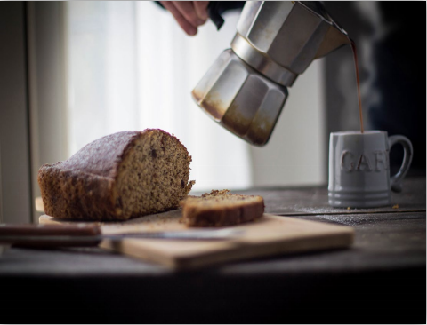
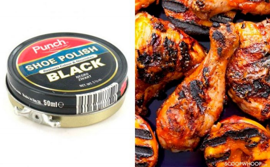
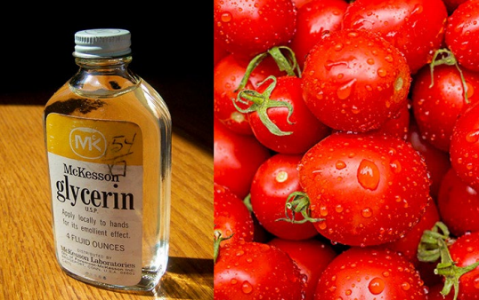
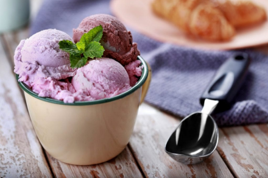
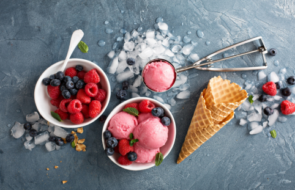
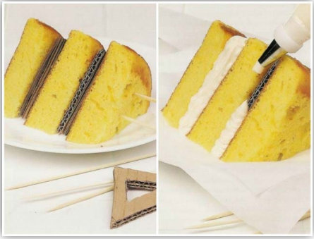

Hola querido revelad@, ¿Te has percatado de lo bien que se ven las fotografías gastronómicas de las marcas conocidas? Son tan buenas que incluso dan la impresión que percibes el olor y sabor de la comida; además, tu mente te convence a desear exactamente lo que estás viendo. Por eso, hoy venimos a pincharte el globo, para que descubras que detrás de cada imagen se ocultan sorprendentes trucos que te dejarán con la boca abierta.
Comenzamos el día viendo las notificaciones del celular. Sin embargo, mientras revisas tus redes, por ahí sale el anuncio de un cafecito humeante, el cual te hace antojar tomar algo calientito. Desgraciadamente del otro lado de la foto, aquel café, está en realidad frío debido a las horas que el fotógrafo dedicó buscando la foto precisa. El hack sería entonces, un algodón con un poco de agua, unos minutos en el microondas y tienes todo el humo que quieras para la fotografía del cafecito.
¿Tomaste tu cafecito? Perfecto.
De Perú para el mundo, uno de nuestros platos bandera, el delicioso pollito a la brasa que nos acompaña en cada celebración o incluso en días ordinarios solo para darnos un gustito, lleva consigo un secreto oscuro, y vaya que es cierto, oscuro como el betún de zapatos que se emplea para darle ese toque crocante. Este truco aplicado a ciertas zonas con más su dorado natural hace el contraste perfecto que, a más de uno, le provoque saborear una pieza.
Una producción grande implica nutrientes grandes, cuando se desea transmitir esa frescura y naturalidad que caracteriza a ciertos productos, lo orgánico va de la mano con lo natural. La glicerina ayuda a otorgar ese espesor en las gotas de agua, además, hace que mantenga su forma por largo tiempo haciendo posible la toma de varias fotos.
Para los amantes del helado en invierno, aquí les traigo una pequeña degustación, sin embargo... ¿Eh? ¿Qué dices? ¿que tu helado sabe a papa?
Exactamente, lo que estás viendo no es helado,sino puré de papas con colorante.
A ver, en este punto quisiera que te pongas una mano en el corazón. Imagina que estás queriendo poner todas tus ganas para hacer fotos a un helado, pero no tienes mucho tiempo porque el helado comenzará a derretirse. Entonces, es natural pensar, queuna foto de buena calidad necesita tiempo de desarrollo y elaboración.Aun así, sería bueno experimentar con diferentes tipos de papa, para ver cual cae mejor a la foto con heladitos. Challenge para el verano, no se olviden.
Curiosos casos, ¿verdad? Pero no me he olvidado de aquellos que tienen su emprendimiento de repostería. Para este caso, tenemos la solución para una presentación de tortas, ya que, si bien es cierto se ven deliciosas, pero su estructura ordenada sobre un plato no siempre es posible, entonces, el consejo es no desechar las cajas de cartón. Son utilizables para poder realizar una presentación sólida de la torta que deseas presentar al mercado.
Ahora bien, estos trucos pueden ser malentendidos con el mensaje “soy tan rico como en esta foto”, pero lo que en apariencia puede parecer engañoso, es el fruto del trabajo real del fotógrafo publicitario por querer mostrar lo que nuestros ojos quieren ver; algo atrayente que entre en nuestro cerebro a través de una historia, aquella que nos diga que ese producto está hecho con dedicación para el cliente y no solamente una unidad más que puede ser encontrada en la grande distribución.
Es un producto que puede brindar una experiencia.
Por eso, revélate sin temor y crea tus propios hacks fotográficos. Nada más ten cuidado con tus experimentos, no dejes que nadie se los coma.